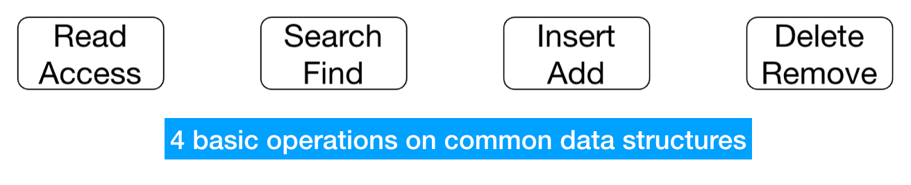
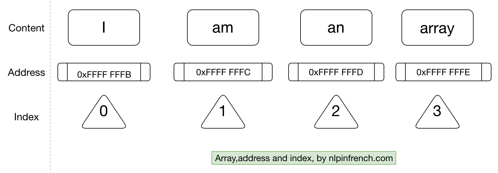

Data structures or many ways of organizing your stuff 🇬🇧¶
I ain’t know nothing about data structures¶
Many people, when being introduced to data structures related concepts, don’t realize that they already use extensively various kinds of data structures in their life.
Check out the following example:
[1]:
# First way
x = "hello"
y = "my name"
z = "is Xiaoou"
print(x,y,z)
# Second way
presentation = ["hello","my name","is Xiaoou"]
print(presentation[0],presentation[1],presentation[2])
# Third way
for word in presentation:
print(word, end = " ")
hello my name is Xiaoou
hello my name is Xiaoou
hello my name is Xiaoou
In the first approach you use a string and you’ll agree that the code, already fulfilling its mission, looks quite weird. The second one looks better because the use of array and the third one is the best-looking one because it takes advantage of the iterable property of an array.
Data structure, speed and memory¶
However, data structure is much more than looking organized. If you’ve read the first tutorial, it should be clear to you that speed matters when designing programs. But to what speed is related ? We all know that hardware impacts strongly the performance, however this aspect is unrelated in our discussion. More concretely, when we use the word speed in algorithms we are referring specifically to how many steps an algorithm takes.
Note that on the Internet you will meet a bunch of terms of which I’ve made a summary.
Don’t be intimidated by these terms. Although there are some subtle differences, in most non-academic contexts they can be used interchangeably.
So what do I mean by how many steps?
For this you have to know how things are stored/organized on your computer’s memory.
How computer memory works¶
Put simply, the computer memory has a lot of memory addresses by means of which we can store things. Some are distributed sparsely while some, like array, are placed on a compact memory span.
Another common data structure is called set. The set is very useful when we need a list of non-duplicate items. A common example is phone book.
However the difference between array and set goes far beyond the aforementioned constraint. In order to understand the performance of any data structure, you need to know the 4 common ways our code might interact with that data structure.
Analyse a data structure (Read, search, insert and delete)¶
Read refers to checking the value at a specific memory address.
Search refers to checking whether a certain value exists and if so, retrieve the memory address of where this value is located.
Insert refers to adding a new value at a specific position.
Delete refers to removing a value.
So what is the efficiency of there 4 operations when it comes to array and set?
Let’s look at the operation of reading. Only 2 steps are necessary for both cases. That’s because these two structures are stored in memory as follows:
Each value (content) is retrievable via a memory address which in turn is related to an index.
Quick anecdote: Do you know why in most programming languages the index starts at 0?
It’s because 0 means 0 element from the beginning = the same address as the start of of the array, a value remembered by your computer when you create an array. Another value recorded is the length of the array.
Read (list vs set)¶
Say that you want to check the value at index 3. All you need to do is:
Add 3 to the address of the first element.
Access the value.
So basically it takes 2 steps.
Search (list vs set)¶
Unluckily we don’t have instant access to each value of an array/set, so in the worst case, we’d have to check all the values = N steps to find a value/affirm its absence. This principle applies to both data structures.
Insert (idem)¶
Here comes the real game (in French we say ça change la donne).
First of all it takes at most N steps to insert a new value into an array. Finding the right spot takes just 1 step (see the Read section), however before insertion one has to shift all the elements to make space for the new element.
I know, one picture is worth a thousand words.
What is the best case? Well it happens when one inserts a new element at the end. As said before, your computer already knows the length of your array, i.e. it already knows the address of the last element. Better, no shift is required.
What about set?
Remember that a set is supposed to contain no duplicate elements. So first you have to make sure that the element to be inserted has no duplicate! In the worst case it takes N steps. Besides, when we’re inserting a value at the beginning of a set, another N steps are required to shift all the data to the right and another final step to insert the new value, taking the total number of steps to 2N + 1 steps.
Deletion (idem)¶
Just like the insertion, deletion requires also shifting because remember, an array should be stored on contingent memory cells. The sames applies to array-based set. So it’s not difficult to figure out that in the worst case we are bound to make N moves when the first element is deleted.
Which data structure to use¶
That’s a tricky question and it all depends on how well you know your data. If you are quite sure that your workflow won’t involve a lot of insertion, then it would be safe to use a set since you want some strong constraint on your data. Otherwise you should use an array-like structure since frequent insertions would considerably slow down your program’s performance.
I see it coming already: but that’s only 1 operation right? Don’t hurry, the next tutorial will help you gain a solid grasp on the intricate interactions between data structures, algorithms and performance. You would also know why we distinguish best case, average and worst cases when it comes to comparing algorithms.
Especially you’ll get to know a domain of extensive research in computer science: sorting.
Stay tuned!
[62]:
# create a random list with no duplicate values
import random
def generate_list(n):
randomlist = list(range(n))
# shuffle list in place
random.shuffle(randomlist)
return randomlist
test = generate_list(100)
len(test)
[62]:
100
[ ]:
def linear_search(arr, x):
for i in range(len(arr)):
if arr[i] == x:
return i
return -1
[44]:
randomlist_sorted = sorted(randomlist)
[45]:
def binary_search(arr, element):
start = 0
end = len(arr)-1
while (start <= end):
mid = (start + end) // 2
if element == arr[mid]:
return mid
elif element < arr[mid]:
end = mid - 1
else:
start = mid + 1
return -1
[45]:
154
[46]:
%%timeit -r1 -n100
binary_search(randomlist_sorted, 295)
977 ns ± 0 ns per loop (mean ± std. dev. of 1 run, 100 loops each)
[47]:
%%timeit -r1 -n100
linear_search(randomlist_sorted,295)
8.9 µs ± 0 ns per loop (mean ± std. dev. of 1 run, 100 loops each)
ns stands for nanoseconds, meaning \(10^{-9}\). µs means microseconds = \(10^{-6}\) seconds.
[53]:
# sorted list in python
# !pip install sortedcontainers
[54]:
from sortedcontainers import SortedList
sl = SortedList(['f', 'a', 'c', 'd', 'b'])
sl.add("e")
sl.index("f")
[54]:
5
[55]:
# bubble sort, raw version
def bubble_sort(our_list):
# We go through the list as many times as there are elements
for i in range(len(our_list)):
# We want the last pair of adjacent elements to be (n-2, n-1)
for j in range(len(our_list) - 1):
if our_list[j] > our_list[j+1]:
# Swap
our_list[j], our_list[j+1] = our_list[j+1], our_list[j]
[56]:
our_list = [19, 13, 6, 2, 18, 8]
bubble_sort(our_list)
print(our_list)
[2, 6, 8, 13, 18, 19]
[57]:
# optimization
def bubble_sort(our_list):
has_swapped = True
num_of_iterations = 0
while(has_swapped):
has_swapped = False
for i in range(len(our_list) - num_of_iterations - 1):
if our_list[i] > our_list[i+1]:
# Swap
our_list[i], our_list[i+1] = our_list[i+1], our_list[i]
has_swapped = True
num_of_iterations += 1
[63]:
# selection sort the joker sort
def selection_sort(L):
# i indicates how many items were sorted
for i in range(len(L)-1):
# To find the minimum value of the unsorted segment
# We first assume that the first element is the lowest
min_index = i
# We then use j to loop through the remaining elements
for j in range(i+1, len(L)-1):
# Update the min_index if the element at j is lower than it
if L[j] < L[min_index]:
min_index = j
# After finding the lowest item of the unsorted regions, swap with the first unsorted item
L[i], L[min_index] = L[min_index], L[i]
[64]:
# Python program for implementation of Insertion Sort
# Function to do insertion sort
def insertionSort(arr):
# Traverse through 1 to len(arr)
for i in range(1, len(arr)):
key = arr[i]
# Move elements of arr[0..i-1], that are
# greater than key, to one position ahead
# of their current position
j = i-1
while j >= 0 and key < arr[j] :
arr[j + 1] = arr[j]
j -= 1
arr[j + 1] = key
# Driver code to test above
arr = [12, 11, 13, 5, 6]
insertionSort(arr)
for i in range(len(arr)):
print ("% d" % arr[i])
# This code is contributed by Mohit Kumra
5
6
11
12
13
[ ]: